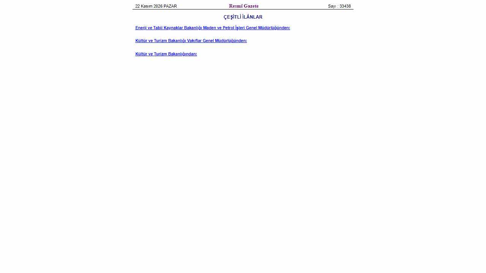
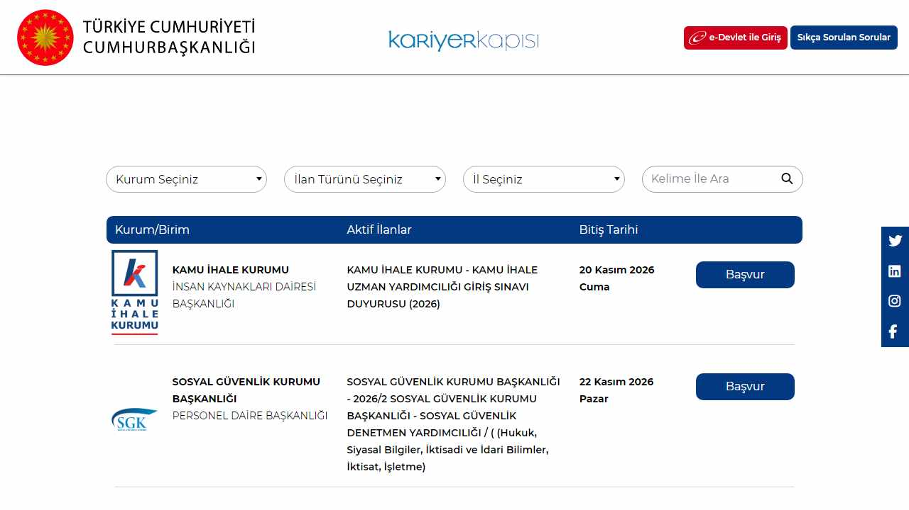
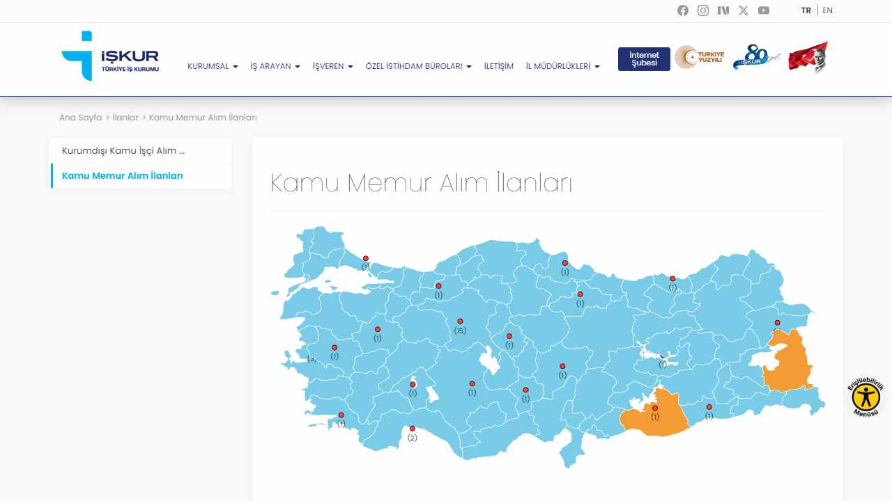

Not: sitede toplam: 134, okunan: 135, sayfalama: currentPage
Son URL: https://www.ilan.gov.tr/ilan/tum-ilanlar/personel-alimi?ats=5¤tPage=12
Başlık: ilan.gov.tr - Türkiye'nin İlan Portalı

Tüm İlanlar Kurumsal Destek İletişim Üye OlGiriş Yap Yardım TÜM İLANLAR İCRA İHALE TEBLİGAT PERSONEL ALIMI Ana Sayfa Kategoriler Kamu-Akademik Personel (134) Kelime ile Arayınız İlan Yeri Lütfen İl Seçiniz Yayın Tarihi Yayına Göre Arama Lütfen Yayın Seçiniz Kuruma Göre Arama Lütfen Kurum Seçiniz Fiyat İlan Türü Seçiniz İCRA İHALE TEBLİGAT PERSONEL ALIMI Eleman Sayısı Aranılan Nitelik ve Unvan Başvuru Süresi İlan Ara Görünüm Tarihe göre sıralama Toplam 134 ilan Kurum Başlık İlan Numarası Şehir TÜRMOB TÜRKİYE SERBEST MUHASEBECİ MALİ MÜŞAVİRLER VE YEMİNLİ MALİ MÜŞAVİRLER ODALARI BİRLİĞİ TÜRMOB'dan Yeminli Mali Müşavirlik Sınav Duyurusu DPB845226 ANKARA SEGEM SİGORTACILIK EĞİTİM MERKEZİ 2026 Yılı Aktüerlik Sınavları İlanı ILN02369824 İSTANBUL Önceki sayfa sayfa 1 sayfa ... sayfa 8 sayfa 9 sayfa 10 sayfa 11 Şu sayfadasınız 12 Sonraki sayfa
'' -> / 'Tüm İlanlar' -> /ilan/tum-ilanlar 'İCRA' -> /ilan/tum-ilanlar/icra?ats=2 'İHALE' -> /ilan/tum-ilanlar/ihale?ats=3 'TEBLİGAT' -> /ilan/tum-ilanlar/tebligat?ats=4 'PERSONEL ALIMI' -> /ilan/tum-ilanlar/personel-alimi?ats=5 '' -> /ilan/tum-ilanlar/icra?ats=2 '' -> /ilan/kategori/1/emlak?ats=2 '' -> /ilan/kategori/2/vasita?ats=2 '' -> /ilan/kategori/4/endustriyel-urunler?ats=2 '' -> /ilan/kategori/6/elektronik?ats=2 '' -> /ilan/kategori/3/muhtelif?ats=2 '' -> /ilan/tum-ilanlar/ihale?ats=3 '' -> /ilan/kategori/9/ihale-duyurulari?ats=3 '' -> /ilan/kategori/1/emlak?ats=3 '' -> /ilan/kategori/2/vasita?ats=3 '' -> /ilan/kategori/4/endustriyel-urunler?ats=3 '' -> /ilan/kategori/6/elektronik?ats=3 '' -> /ilan/tum-ilanlar/tebligat?ats=4 '' -> /ilan/kategori/7/tebligat-ve-duyurular?ats=4 '' -> /ilan/kategori/12/iflas-hukuku-davalari?ats=4 '' -> /ilan/tum-ilanlar/personel-alimi?ats=5 '' -> /ilan/kategori/8/kamu-akademik-personel?ats=5 '' -> /ilan/tum-ilanlar 'Kurumsal' -> /kurumsal-basin-ilan-kurumu 'Destek' -> /yardim-nasil-uye-olurum 'İletişim' -> /iletisim-genel-mudurluk '' -> https://www.facebook.com/resmiilan/ '' -> https://sosyal.teknofest.app/@ilangovtr '' -> https://twitter.com/ilangovtr '' -> https://www.youtube.com/channel/UCoLna6joUEuJ4eO7bjCP_Bw '' -> https://www.instagram.com/resmiilan/ '' -> https://www.linkedin.com/company/ilan-gov-tr/ 'Üye Ol' -> /uyelik/uye-ol 'Giriş Yap' -> /uyelik/giris '' -> https://www.ilan.gov.tr/ilan/2288074/emlak-arsa-geyikli-belediyesinden-30-adet-arsa-satilacaktir 'TÜM İLANLAR' -> /ilan/tum-ilanlar 'İCRA' -> /ilan/tum-ilanlar/icra?ats=2 'İHALE' -> /ilan/tum-ilanlar/ihale?ats=3 'TEBLİGAT' -> /ilan/tum-ilanlar/tebligat?ats=4
GET 200 https://www.ilan.gov.tr//assets/appconfig.production.json
yanıt: {
"remoteServiceBaseUrl": "https://www.ilan.gov.tr/api",
"appBaseUrl": "https://www.ilan.gov.tr",
"cdnBaseUrl": "https://medya.ilan.gov.tr/"
}
GET 200 https://www.ilan.gov.tr/api/AbpUserConfiguration/GetAll
yanıt: {"result":{"multiTenancy":{"isEnabled":false,"ignoreFeatureCheckForHostUsers":false,"sides":{"host":"Host","tenant":"Tenant"}},"session":{"userId":null,"tenantId":1,"impersonatorUserId":null,"impersonatorTenantId":1,"multiTenancySide":"Tenant"},"localization":{"currentCulture":{"name":"tr","displayN
POST 200 https://www.google-analytics.com/j/collect?v=1&_v=j102&a=178455413&t=pageview&_s=1&dl=https%3A%2F%2Fwww.ilan.gov.tr%2Filan%2Ftum-ilanlar%2Fpersonel-alimi%3Fats%3D5&ul=tr-tr&dt=ilan.gov.tr%20-%20T%C3%B
POST 204 https://region1.google-analytics.com/g/collect?v=2&tid=G-E5HGE1NKEK>m=45je6bh1v9116736288za20gzb9119647798zd9119647798xf1&_p=1795105550129&gcd=13l3l3l2l1l1&npa=1&dma_cps=a&dma=1&_eu=AEAAAAQ&ae=a&are
POST 204 https://region1.google-analytics.com/g/collect?v=2&tid=G-E5HGE1NKEK>m=45je6bh1v9116736288za20ozb9119647798zd9119647798xf1&_p=1795105550129&gcd=13l3l3l2l1l1&npa=1&dma_cps=a&dma=1&are=1&cid=484366219.
GET 200 https://www.ilan.gov.tr/api/api/services/app/Session/GetCurrentLoginInformations
yanıt: {"result":{"application":{"version":"5.0.0.0","releaseDate":"2026-09-24T04:22:04Z","features":{}},"user":null,"tenant":{"tenancyName":"Default","name":"Default","id":1}},"targetUrl":null,"success":true,"error":null,"unAuthorizedRequest":false,"__abp":true}
GET 200 https://www.ilan.gov.tr/api/api/services/app/AdHomePage/GetRichMenuStats
yanıt: {"result":[{"id":2,"key":"İCRA","displayName":null,"slug":"İCRA","plateNumber":null,"count":0,"stats":[{"id":1,"key":"Emlak","displayName":null,"slug":"Emlak","plateNumber":null,"count":8784,"stats":null,"orderNo":25,"statType":"Category","logoPath":null,"iconFullPath":null},{"id":2,"key":"Vasıta","
GET 200 https://www.ilan.gov.tr/api/api/services/app/Banner/GetDetailUniversal?bannerPositionEnum=Genel_Ust
yanıt: {"result":{"name":"Geyikli Belediyesi arsa satış1","imageName":"Geyikli%20Belediyesi%20(2).png","imagePath":"Dosyalar/resim","orderNo":null,"attributeSetId":null,"isActive":true,"bannerPositionId":1,"publishStartDate":"2026-11-17T21:00:00Z","publishEndDate":"2026-11-20T21:02:00Z","bannerType":"UTM",
GET 200 https://www.ilan.gov.tr/api/api/services/app/Banner/GetDetailUniversal?bannerPositionEnum=Genel_Sag
yanıt: {"result":null,"targetUrl":null,"success":true,"error":null,"unAuthorizedRequest":false,"__abp":true}
GET 200 https://www.ilan.gov.tr/api/api/services/app/Banner/GetDetailUniversal?bannerPositionEnum=Popup_Genel
yanıt: {"result":null,"targetUrl":null,"success":true,"error":null,"unAuthorizedRequest":false,"__abp":true}
GET 200 https://www.ilan.gov.tr/api/api/services/app/Banner/GetDetailUniversal?bannerPositionEnum=Mobil_Genel_Ust
yanıt: {"result":{"name":"Geyikli Belediyesi arsa satış mobil ","imageName":"Geyikli%20Belediyesi%20(2).png","imagePath":"Dosyalar/resim","orderNo":null,"attributeSetId":null,"isActive":true,"bannerPositionId":24,"publishStartDate":"2026-11-17T21:00:00Z","publishEndDate":"2026-11-21T21:02:00Z","bannerType"
GET 200 https://www.ilan.gov.tr/api/api/services/app/Banner/GetDetailUniversal?bannerPositionEnum=Mobil_Genel_Sol
yanıt: {"result":null,"targetUrl":null,"success":true,"error":null,"unAuthorizedRequest":false,"__abp":true}
GET 200 https://www.ilan.gov.tr/api/api/services/app/Banner/GetDetailUniversal?bannerPositionEnum=Mobil_Genel_Sag
yanıt: {"result":null,"targetUrl":null,"success":true,"error":null,"unAuthorizedRequest":false,"__abp":true}
GET 200 https://www.ilan.gov.tr/api/api/services/app/Banner/GetDetailUniversal?bannerPositionEnum=Genel_Sol
yanıt: {"result":null,"targetUrl":null,"success":true,"error":null,"unAuthorizedRequest":false,"__abp":true}
GET 200 https://www.ilan.gov.tr/api/api/services/app/Menu/GetBottomMenu
yanıt: {"result":[{"id":81,"parentId":null,"url":null,"title":"KURUMSAL","children":[{"id":86,"parentId":81,"url":"/kurumsal-basin-ilan-kurumu","title":"Basın İlan Kurumu","children":null,"isSelected":false,"contentTitle":"-","contentSlug":"-","contentDetail":"-"},{"id":170,"parentId":81,"url":"/kurumsal-t
GET 200 https://www.ilan.gov.tr/api/api/services/app/Banner/GetDetailUniversal?bannerPositionEnum=Icsayfa_Ust
GET 200 https://www.ilan.gov.tr/api/api/services/app/Banner/GetDetailUniversal?bannerPositionEnum=Mobil_Icsayfa_Sol
GET 200 https://www.ilan.gov.tr/api/api/services/app/Banner/GetDetailUniversal?bannerPositionEnum=Mobil_Icsayfa_Ust
GET 200 https://www.ilan.gov.tr/api/api/services/app/Banner/GetDetailUniversal?bannerPositionEnum=Icsayfa_Sol
GET 200 https://www.ilan.gov.tr/api/api/services/app/Banner/GetDetailUniversal?bannerPositionEnum=Mobil_Icsayfa_Sag
GET 200 https://www.ilan.gov.tr/api/api/services/app/Banner/GetDetailUniversal?bannerPositionEnum=Icsayfa_Sag
GET 200 https://www.ilan.gov.tr/api/api/services/app/Filter/GetAllFiltersOfSet?setIdAdType=5
GET 200 https://www.ilan.gov.tr/api/api/services/app/AdHomePage/GetAdStatsByExternalInstitutions
POST 200 https://www.ilan.gov.tr/api/api/services/app/Ad/AdsByFilter
gövde: {"keys":{"ats":[5]},"skipCount":0,"maxResultCount":12}
GET 200 https://www.ilan.gov.tr/api/api/services/app/Banner/GetDetailUniversal?bannerPositionEnum=Mobil_Icsayfa_OrtaNot: sitede toplam: 15, okunan: 15, personel ilanı: 9, PDF bulma: dizin linkleri — taranmış PDF Gemini ile okundu: 1
Son URL: https://www.resmigazete.gov.tr/ilanlar/eskiilanlar/2026/11/20261119-4.htm
Başlık: ÇEŞİTLİ İLANLAR

19 Kasım 2026 PERŞEMBE Resmî Gazete Sayı : 33435 ÇEŞİTLİ İLÂNLAR İçişleri Bakanlığından: Sosyal Güvenlik Kurumu Başkanlığından: Bolu İli Mudurnu Belediye Başkanlığından: İstanbul Medipol Üniversitesi Rektörlüğünden: Mersin Üniversitesi Rektörlüğünden: Milli Eğitim Bakanlığı Temel Eğitim Genel Müdürlüğünden: Enerji ve Tabii Kaynaklar Bakanlığı Eti Maden İşletmeleri Kırka Bor İşletme Müdürlüğünden: Tarım ve Orman Bakanlığı Orman Genel Müdürlüğünden: Çevre, Şehircilik ve İklim Değişikliği Bakanlığı Tabiat Varlıklarını Koruma Genel Müdürlüğünden: Sağlık Bakanlığı Strateji Geliştirme Başkanlığından: Kahramanmaraş Sütçü İmam Üniversitesi Rektörlüğünden: Bayburt Üniversitesi Rektörlüğünden: Bilecik Şeyh Edebali Üniversitesi Rektörlüğünden: İstanbul Atlas Üniversitesi Rektörlüğünden: Kültür ve Turizm Bakanlığından:
'İçişleri Bakanlığından:' -> 20261119-4-1.pdf 'Sosyal Güvenlik Kurumu Başkanlığından:' -> 20261119-4-2.pdf 'Bolu İli Mudurnu Belediye Başkanlığından:' -> 20261119-4-3.pdf 'İstanbul Medipol Üniversitesi Rektörlüğünden:' -> 20261119-4-4.pdf 'Mersin Üniversitesi Rektörlüğünden:' -> 20261119-4-5.pdf 'Milli Eğitim Bakanlığı Temel Eğitim Genel Müdürlüğünden:' -> 20261119-4-6.pdf 'Enerji ve Tabii Kaynaklar Bakanlığı Eti Maden İşletmeleri Kırka Bor İş' -> 20261119-4-7.pdf 'Tarım ve Orman Bakanlığı Orman Genel Müdürlüğünden:' -> 20261119-4-8.pdf 'Çevre, Şehircilik ve İklim Değişikliği Bakanlığı Tabiat Varlıklarını K' -> 20261119-4-9.pdf 'Sağlık Bakanlığı Strateji Geliştirme Başkanlığından:' -> 20261119-4-10.pdf 'Kahramanmaraş Sütçü İmam Üniversitesi Rektörlüğünden:' -> 20261119-4-11.pdf 'Bayburt Üniversitesi Rektörlüğünden:' -> 20261119-4-12.pdf 'Bilecik Şeyh Edebali Üniversitesi Rektörlüğünden:' -> 20261119-4-13.pdf 'İstanbul Atlas Üniversitesi Rektörlüğünden:' -> 20261119-4-14.pdf 'Kültür ve Turizm Bakanlığından:' -> 20261119-4-15.pdf
POST 200 https://v2-ping-ns01-4878e6a4-2a79-41cc-93d6-0ffc5a9b6c2d.collector.p.analitik.bik.gov.tr/api/collect/check
gövde: {"website":"4878e6a4-2a79-41cc-93d6-0ffc5a9b6c2d","hostname":"www.ilan.gov.tr","eventId":"9fd1975e-5c10-4475-a0bb-132d2e1f57f8","isBot":false,"td":13,"ts":1794474551000,"timestamp":1795105600334,"actiNot: ilan/tablo bulunamadı — tanı sayfasına bak
Son URL: https://kariyerkapisi.gov.tr/isealim
Başlık: Kariyer Kapısı - Anasayfa

e-Devlet ile Giriş Sıkça Sorulan Sorular
Kurum Seçiniz
Kurum Seçiniz
İlan Türünü Seçiniz
İlan Türünü Seçiniz
İl Seçiniz
İl Seçiniz
Kurum/Birim
Aktif İlanlar
Bitiş Tarihi
© 2026 - Kariyer Kapısı - T.C. Cumhurbaşkanlığı
'' -> # '' -> # 'e-Devlet ile Giriş' -> https://giris.turkiye.gov.tr/OAuth2AuthorizationServer/AuthorizationController?response_type=code&client_id=88 'Sıkça Sorulan Sorular' -> sss '' -> # '' -> https://twitter.com/kariyerkapisi '' -> https://www.linkedin.com/showcase/kariyerkapisi/ '' -> https://www.instagram.com/kariyerkapisi/?igshid=sj6wm9vis9se '' -> https://www.facebook.com/kariyerkapisi/ '' -> /isealim '' -> https://kariyerkapisi.gov.tr/RSS/RssLinkiAl '' -> https://www.linkedin.com/showcase/kariyerkapisi '' -> https://www.facebook.com/kariyerkapisi/ '' -> https://twitter.com/kariyerkapisi '' -> https://instagram.com/kariyerkapisi?igshid=sj6wm9vis9se
POST 204 https://region1.google-analytics.com/g/collect?v=2&tid=G-756JYX7QPN>m=45je6bh1v9228915839za208zd9228915839xf1&_p=1795105638705&gcd=13l3l3l2l1l1&npa=1&dma_cps=a&dma=1&are=1&cid=415606136.1795105639&f POST 204 https://region1.google-analytics.com/g/collect?v=2&tid=G-756JYX7QPN>m=45je6bh1v9228915839za200zd9228915839xf1&_p=1795105638705&gcd=13l3l3l2l1l1&npa=1&dma_cps=a&dma=1&_eu=AEAAAAQ&ae=a&are=1&cid=41560 POST 204 https://region1.google-analytics.com/g/collect?v=2&tid=G-756JYX7QPN>m=45je6bh1v9228915839za208zd9228915839xf1&_p=1795105667698&gcd=13l3l3l2l1l1&npa=1&dma_cps=a&dma=1&_eu=AAAAAAQ&are=1&cid=415606136. POST 204 https://region1.google-analytics.com/g/collect?v=2&tid=G-756JYX7QPN>m=45je6bh1v9228915839za200zd9228915839xf1&_p=1795105667698&gcd=13l3l3l2l1l1&npa=1&dma_cps=a&dma=1&_eu=AEAAAAQ&ae=a&are=1&cid=41560
Not: HATA: SBB sitesi bu çalıştırma ortamını coğrafi erişim kuralıyla engelledi — 3 deneme başarısız. Ayrıntı: SBB sitesi bu çalıştırma ortamını coğrafi erişim kuralıyla engelledi
Son URL: https://kamuilan.sbb.gov.tr/
Başlık: Access Restricted

Geographic Restriction Error 403 - Access Denied Access from your region is not permitted. This restriction is enforced by the website administrator based on geographic location policies. If you believe this is an error, please contact the site administrator. Powered by altosec.com
'altosec.com' -> https://altosec.com
(yok)
Not: sitede toplam: 43, okunan: 43 (yalnız ilan/alım başlıklı duyurular; 4 sayfa gezildi)
Son URL: https://yerelyonetimler.csb.gov.tr/duyurular/4
Başlık: Duyurular

Çerez Tercihiniz Bu site, çalışması için gereken zorunlu çerezleri kullanır. Onay verirseniz analitik ve pazarlama çerezleri de kullanılır. Hangi kategorilere izin vereceğinizi "Özelleştir" düğmesiyle seçebilirsiniz. Gizlilik ve Çerez Politikası Özelleştir Reddet Kabul Et Menü Arama yapınız.. Birimler Mevzuat Personel Hizmetleri Eylem Planları Rehberler Faaliyet Raporları İç Kontrol Resmi İstatistik Yerel Bilgi Sistemi İstatistikler Tüm Haberler Tüm Duyurular Anketler Sık Sorulan Sorular Dokümanlar İletişim Bilgileri Arama yapınız.. Kuruluş ve Görevler Misyon-Vizyon Genel Müdürlüğümüz TR Takip Et Duyurular Ana Sayfa Duyurular Sayfa: 4 Son Duyurular 17 Kasım 2026 Salı MUDURNU BELEDİYE BAŞKANLIĞINA İLK DEFA ATANMAK ÜZERE SÖZLEŞMELİ PERSONEL ALIM İLANI... 09 Kasım 2026 Pazartesi SAMSUN İLİ ASARCIK BELEDİYESİ MEMUR ALIMI İPTAL İLANI... 06 Kasım 2026 Cuma AĞRI İLİ ELEŞKİRT BELEDİYESİ MEMUR ALIMI İPTAL İLANI... 05 Kasım 2026 Perşembe NİĞDE İLİ BOZKÖY BELEDİYE BAŞKANLIĞINA İLK DEFA ATANMAK ÜZERE İTFAİYE ERİ ALIMI İLANI... 05 Kasım 2026 Perşembe ANTALYA İLİ AKSEKİ BELEDİYE BAŞKANLIĞINA İLK DEFA ATANMAK ÜZERE MEMUR ALIM İLANI... 04 Kasım 2026 Çarşamba ANTALYA İLİ GÜNDOĞMUŞ BELEDİYE BAŞKANLIĞINA İLK DEFA ATANMAK ÜZERE MEMUR ALIM İLANI... 04 Kasım 2026 Çarşamba TOKAT İLİ TANOBA BELEDİYE BAŞKANLIĞINA İLK DEFA ATANMAK ÜZERE MEMUR ALIM İLANI... 04 Kasım 2026 Çarşamba MUĞLA İLİ ULA BELEDİYE BAŞKANLIĞINA İLK DEFA ATANMAK ÜZERE ZABITA MEMURU ALIM
'Gizlilik ve Çerez Politikası' -> https://csb.gov.tr/gizlilik-ve-cerez-politikasi-113655 'Gizlilik ve Çerez Politikası' -> https://csb.gov.tr/gizlilik-ve-cerez-politikasi-113655 '' -> / 'Birimler' -> https://yerelyonetimler.csb.gov.tr/birimler 'Mevzuat' -> https://yerelyonetimler.csb.gov.tr/ 'Kanunlar' -> https://yerelyonetimler.csb.gov.tr/kanunlar-i-90281 'Tüzükler' -> https://yerelyonetimler.csb.gov.tr/tuzukler-i-101924 'Yönetmelikler' -> https://yerelyonetimler.csb.gov.tr/yonetmelikler-i-90283 'Usul ve Esaslar' -> https://yerelyonetimler.csb.gov.tr/usul-ve-esaslar-i-101925 'Tebliğler' -> https://yerelyonetimler.csb.gov.tr/tebligler-i-106938 'Genelgeler' -> https://yerelyonetimler.csb.gov.tr/genelgeler-i-90284 'Yönergeler' -> https://yerelyonetimler.csb.gov.tr/yonergeler-i-101926 'Genel Yazılar' -> https://yerelyonetimler.csb.gov.tr/genel-yazilar-i-99398 'Mahalli İdareler Detaylı Hesap Planları' -> https://yerelyonetimler.csb.gov.tr/mahalli-idareler-detayli-hesap-planlari-i-100359 'Tasarruf Tedbirleri Genelgesi' -> https://yerelyonetimler.csb.gov.tr/tasarruf-tedbirleri-genelgesi-i-109410 'Görüşler' -> https://yerelyonetimler.csb.gov.tr/gorusler-91360 'Belediye Görüşleri' -> https://yerelyonetimler.csb.gov.tr/belediye-gorusleri-i-98891 'İşyeri Görüşleri' -> https://yerelyonetimler.csb.gov.tr/isyeri-gorusleri-i-98892 'Personel Görüşleri' -> https://yerelyonetimler.csb.gov.tr/personel-gorusleri-i-98889 'İdari Para Cezaları ve Parasal Sınırlar' -> https://yerelyonetimler.csb.gov.tr/idari-para-cezalari-ve-parasal-sinirlar-i-106809 'Komisyon Üyesi Hesaplama Tablosu' -> https://yerelyonetimler.csb.gov.tr/komisyon-uyesi-hesaplama-tablosu-88464 'Personel Hizmetleri' -> https://yerelyonetimler.csb.gov.tr/personel-hizmetleri-i-103128 'Büyükşehir Belediyeleri ve Bağlı Kuruluşları Şube Müdürlüğü İsimleri' -> https://yerelyonetimler.csb.gov.tr/buyuksehir-belediyeleri-ve-bagli-kuruluslari-sube-mudurlugu-isimleri-114946 'Personel Hizmetleri Rehberleri' -> https://yerelyonetimler.csb.gov.tr/personel-hizmetleri-rehberleri-113704 'Personel Alım İzni Formları' -> https://yerelyonetimler.csb.gov.tr/personel-alim-izni-formlari-i-111513 'Örnek İlan Metinleri' -> https://yerelyonetimler.csb.gov.tr/ornek-ilan-metinleri-i-111565 'Eylem Planları' -> https://yerelyonetimler.csb.gov.tr/eylem-planlari-i-103925 'Karayolu Trafik Güvenliği' -> https://yerelyonetimler.csb.gov.tr/karayolu-trafik-guvenligi-i-103926 'Rehberler' -> https://yerelyonetimler.csb.gov.tr/rehberler-i-112411 'Bütçe Hazırlama Rehberi' -> https://yerelyonetimler.csb.gov.tr/butce-hazirlama-rehberi-i-103179 '2022 - 2024 Bütçe Hazırlama Rehberi' -> https://yerelyonetimler.csb.gov.tr/2022---2024-butce-hazirlama-rehberi-i-106799 '2023 - 2025 Bütçe Hazırlama Rehberi' -> https://yerelyonetimler.csb.gov.tr/2023---2025-butce-hazirlama-rehberi-i-106800 '2024 - 2026 Bütçe Hazırlama Rehberi' -> https://yerelyonetimler.csb.gov.tr/2024---2026-butce-hazirlama-rehberi-i-110944 '2025 - 2027 Bütçe Hazırlama Rehberi' -> https://yerelyonetimler.csb.gov.tr/2025---2027-butce-hazirlama-rehberi-i-112395 '2026 - 2028 Bütçe Hazırlama Rehberi' -> https://yerelyonetimler.csb.gov.tr/2026---2028-butce-hazirlama-rehberi-i-113107 '2027 - 2029 Bütçe Hazırlama Rehberi' -> https://yerelyonetimler.csb.gov.tr/2027-2029-butce-hazirlama-rehberi-114911 'Belediye Meclisi, Toplantı ve Çalışmasına İlişkin Rehber' -> https://webdosya.csb.gov.tr/db/yerelyonetimler/dokumanlar/belediye-meclisi--8230-86782-20240415152737.pdf 'Elektrikli Araç Şarj İstasyonları Ruhsatlandırma Rehberi' -> https://yerelyonetimler.csb.gov.tr/elektrikli-arac-sarj-istasyonlari-ruhsatlandirma-rehberi-i-106818 'İncinebilir Yol Kullanıcısı Uygulama Kılavuzu' -> https://yerelyonetimler.csb.gov.tr/incinebilir-yol-kullanicisi-uygulama-kilavuzu-i-110966 'Faaliyet Raporları' -> https://yerelyonetimler.csb.gov.tr/faaliyet-raporlari-i-88463
(yok)
Not: HATA: e-şube: bağlantı kesildi; yedek sayfa: Page.goto: Navigation to "https://www.iskur.gov.tr/ — 3 deneme başarısız. Ayrıntı: e-şube: bağlantı kesildi; yedek sayfa: Page.goto: Navigation to "https://www.iskur.gov.tr/ilanlar/kamu-memur-alim-ilanlari/" is i
Son URL: chrome-error://chromewebdata/
Başlık: Kamu Memur Alım İlanları - Türkiye İş Kurumu (İŞKUR)

Web sitemizde sunulan ve açıkça talep etmiş olduğunuz hizmetler için kesinlikle gerekli, birinci taraf oturum çerezleri ve kalıcı çerezler kullanılmaktadır. Daha fazla bilgi için Çerez Aydınlatma Metni
Kabul Ediyorum Çerez Ayarları Kabul Etmiyorum
TR EN
KURUMSAL
İŞ ARAYAN
İŞVEREN
ÖZEL İSTİHDAM BÜROLARI
İLETİŞİM
İL MÜDÜRLÜKLERİ
İnternet Şubesi
Ana Sayfa
İlanlar
Kamu Memur Alım İlanları
Kamu Memur Alım İlanları
(1)
(14)
(2)
(1)
(1)
(1)
(1)
(3)
(1)
(1)
(1)
(1)
(1)
(1)
(1)
(1)
(1)
(1)
(1)
(1)
Kurumdışı Kamu İşçi Alım ...
Kamu Memur Alım İlanları
KURUMSAL
Bakan
Genel Müdür
Teşkilat Şeması
Etik Komisyonu
Raporlar
Tarihçe
Daha fazla göster
İŞ ARAYAN
Kayıt
İş Arama
Aktif İşgücü Programları
İşsizlik Sigortası
İş ve Meslek Danışmanlığı
İŞVEREN
Kayıt
İşveren Danışmanlığı
Eleman Arama
Yurtdışı İstihdam
İşgücü Çizelgesi
Mesleki Eğitim Kursları
Daha fazla göster
ÖZEL İSTİHDAM BÜROLARI
Başvuru Bilgileri
Özel İstihdam Büroları
Tarım Aracıları
Adres
Emniyet Mahallesi Mevlana Bulvarı (Konya Yolu) No:42 Yenimahalle / ANKARA
Adrese Git
İletişim
TEL:
0 (312) 216 30 00
FAX:
0(312) 435 29 27
İŞKUR İletişim Hattı
444 İŞKUR
(444 75 87)
Mobil Uygulamalar
App Store'dan
İndir
Google Play'den
İndir
Sosyal Medya
© 2026 Türkiye İş Kurumu (İŞKUR) | Bu sitede bulunan yazı, görsel ve video gibi hiçbir içerik izinsiz olarak kullanılamaz.
'Çerez Aydınlatma Metni' -> /kurumsal/bilgi-sayfalari/turkiye-is-kurumu-cerez-politikasi/ '' -> https://www.facebook.com/TurkiyeIsKurumu '' -> https://www.instagram.com/turkiyeiskurumu '' -> https://sosyal.teknofest.app/@turkiyeiskurumu '' -> https://x.com/turkiyeiskurumu '' -> https://www.youtube.com/@turkiyeiskurumu 'TR' -> / 'EN' -> /en '' -> / 'KURUMSAL' -> # 'Bakan' -> /kurumsal/bakan/ 'Genel Müdür' -> /kurumsal/teskilat-yapisi/genel-mudur-samet-gunes/ 'Teşkilat Şeması' -> /kurumsal/teskilat-yapisi/ 'Yönetim Kurulu' -> /kurumsal/yonetim-kurulu/ 'Mevzuat' -> https://km.corpus.com.tr/ 'Hakkında' -> javascript:closeOverl(); 'Tarihçe' -> /kurumsal/tarihce/ 'Etik Komisyonu' -> /kurumsal/etik-komisyonu/ 'Kurumsal Kimlik' -> /kurumsal/kurumsal-kimlik/ 'İhaleler' -> /ihaleler/ 'Raporlar' -> /kurumsal/raporlar/ 'Faaliyetler' -> javascript:closeOverl(); 'İstatistikler' -> /kurumsal/istatistikler/ 'Protokol' -> /kurumsal/protokol/ 'Yayınlar' -> /kurumsal/yayinlar/ 'İç Kontrol' -> /kurumsal/ic-kontrol/ 'Uluslararası İlişkiler ve Projeler' -> /kurumsal/uluslararasi-iliskiler-ve-projeler/ 'Bilgi Sayfaları' -> javascript:closeOverl(); 'Aktif İşgücü Dökümanları' -> /kurumsal/bilgi-sayfalari/aktif-isgucu-dokumanlari/ 'Bilgi Güvenliği Yönetim Sistemi' -> /kurumsal/bilgi-sayfalari/bilgi-guvenligi-yonetim-sistemi/ 'Temiz Masa Temiz Ekran Politikası' -> /kurumsal/bilgi-sayfalari/temiz-masa-temiz-ekran-politikasi/ 'ISO 27001 Sertifikası' -> /kurumsal/bilgi-sayfalari/iso-27001-sertifikasi/ 'Hizmet Standartları' -> /kurumsal/bilgi-sayfalari/hizmet-standartlari/ 'Bilgi Güvenliği Farkındalık Dokümanlarımız' -> /kurumsal/bilgi-sayfalari/bilgi-guvenligi-farkindalik-dokumanlarimiz/ 'KVKK' -> /kurumsal-bilgi/kvkk/ 'Zorunlu Arabuluculuk Komisyonu' -> /kurumsal/bilgi-sayfalari/zorunlu-arabuluculuk-komisyonu/ 'Bilgi Edinme' -> /kurumsal-bilgi/bilgi-edinme/ 'Türkiye İş Kurumu Çerez Politikası' -> /kurumsal/bilgi-sayfalari/turkiye-is-kurumu-cerez-politikasi/ 'Sıkça Sorulan Sorular' -> /sikca-sorulan-sorular/ 'Görüş & Öneri' -> https://forms.iskur.gov.tr/gorus-oneri/
(yok)
Not: sitede toplam: 36, okunan: 36 (haritada ilan bulunan il: 20, tekil PDF: 36)
Son URL: https://www.iskur.gov.tr/ilanlar/kamu-memur-alim-ilanlari/?idId=sanliurfa&il=%C5%9Eanl%C4%B1urfa
Başlık: Kamu Memur Alım İlanları - Türkiye İş Kurumu (İŞKUR)

TR EN KURUMSAL İŞ ARAYAN İŞVEREN ÖZEL İSTİHDAM BÜROLARI İLETİŞİM İL MÜDÜRLÜKLERİ İnternet Şubesi Ana Sayfa İlanlar Kamu Memur Alım İlanları Kamu Memur Alım İlanları (1) (14) (2) (1) (1) (1) (1) (3) (1) (1) (1) (1) (1) (1) (1) (1) (1) (1) (1) (1) Şanlıurfa iline ait İlanlar İlanın Son Tarihi İlanın Başlığı İlanın Detayı 10.12.2026 17:00 Şanlıurfa Eyyübiye Belediyesi Zabıta Memuru Alım ilanı 10.12.2026 Kurumdışı Kamu İşçi Alım ... Kamu Memur Alım İlanları KURUMSAL Bakan Genel Müdür Teşkilat Şeması Etik Komisyonu Raporlar Tarihçe Daha fazla göster İŞ ARAYAN Kayıt İş Arama Aktif İşgücü Programları İşsizlik Sigortası İş ve Meslek Danışmanlığı İŞVEREN Kayıt İşveren Danışmanlığı Eleman Arama Yurtdışı İstihdam İşgücü Çizelgesi Mesleki Eğitim Kursları Daha fazla göster ÖZEL İSTİHDAM BÜROLARI Başvuru Bilgileri Özel İstihdam Büroları Tarım Aracıları Adres Emniyet Mahallesi Mevlana Bulvarı (Konya Yolu) No:42 Yenimahalle / ANKARA Adrese Git İletişim TEL: 0 (312) 216 30 00 FAX: 0(312) 435 29 27 İŞKUR İletişim Hattı 444 İŞKUR (444 75 87) Mobil Uygulamalar App Store'dan İndir Google Play'den İndir Sosyal Medya © 2026 Türkiye İş Kurumu (İŞKUR) | Bu sitede bulunan yazı, görsel ve video gibi hiçbir içerik izinsiz olarak kullanılamaz.
'' -> /kurumsal/bilgi-sayfalari/turkiye-is-kurumu-cerez-politikasi/ '' -> https://www.facebook.com/TurkiyeIsKurumu '' -> https://www.instagram.com/turkiyeiskurumu '' -> https://sosyal.teknofest.app/@turkiyeiskurumu '' -> https://x.com/turkiyeiskurumu '' -> https://www.youtube.com/@turkiyeiskurumu 'TR' -> / 'EN' -> /en '' -> / 'KURUMSAL' -> # 'Bakan' -> /kurumsal/bakan/ 'Genel Müdür' -> /kurumsal/teskilat-yapisi/genel-mudur-samet-gunes/ 'Teşkilat Şeması' -> /kurumsal/teskilat-yapisi/ 'Yönetim Kurulu' -> /kurumsal/yonetim-kurulu/ 'Mevzuat' -> https://km.corpus.com.tr/ 'Hakkında' -> javascript:closeOverl(); 'Tarihçe' -> /kurumsal/tarihce/ 'Etik Komisyonu' -> /kurumsal/etik-komisyonu/ 'Kurumsal Kimlik' -> /kurumsal/kurumsal-kimlik/ 'İhaleler' -> /ihaleler/ 'Raporlar' -> /kurumsal/raporlar/ 'Faaliyetler' -> javascript:closeOverl(); 'İstatistikler' -> /kurumsal/istatistikler/ 'Protokol' -> /kurumsal/protokol/ 'Yayınlar' -> /kurumsal/yayinlar/ 'İç Kontrol' -> /kurumsal/ic-kontrol/ 'Uluslararası İlişkiler ve Projeler' -> /kurumsal/uluslararasi-iliskiler-ve-projeler/ 'Bilgi Sayfaları' -> javascript:closeOverl(); 'Aktif İşgücü Dökümanları' -> /kurumsal/bilgi-sayfalari/aktif-isgucu-dokumanlari/ 'Bilgi Güvenliği Yönetim Sistemi' -> /kurumsal/bilgi-sayfalari/bilgi-guvenligi-yonetim-sistemi/ 'Temiz Masa Temiz Ekran Politikası' -> /kurumsal/bilgi-sayfalari/temiz-masa-temiz-ekran-politikasi/ 'ISO 27001 Sertifikası' -> /kurumsal/bilgi-sayfalari/iso-27001-sertifikasi/ 'Hizmet Standartları' -> /kurumsal/bilgi-sayfalari/hizmet-standartlari/ 'Bilgi Güvenliği Farkındalık Dokümanlarımız' -> /kurumsal/bilgi-sayfalari/bilgi-guvenligi-farkindalik-dokumanlarimiz/ 'KVKK' -> /kurumsal-bilgi/kvkk/ 'Zorunlu Arabuluculuk Komisyonu' -> /kurumsal/bilgi-sayfalari/zorunlu-arabuluculuk-komisyonu/ 'Bilgi Edinme' -> /kurumsal-bilgi/bilgi-edinme/ 'Türkiye İş Kurumu Çerez Politikası' -> /kurumsal/bilgi-sayfalari/turkiye-is-kurumu-cerez-politikasi/ 'Sıkça Sorulan Sorular' -> /sikca-sorulan-sorular/ 'Görüş & Öneri' -> https://forms.iskur.gov.tr/gorus-oneri/
(yok)
Not: sitede toplam: 100, okunan: 100 (haritada ilan bulunan il: 32, tekil PDF: 100)
Son URL: https://www.iskur.gov.tr/ilanlar/kurumdisi-kamu-isci-alim-ilanlari/?idId=duzce&il=D%C3%BCzce
Başlık: Kurumdışı Kamu İşçi Alım İlanları - Türkiye İş Kurumu (İŞKUR)

TR EN KURUMSAL İŞ ARAYAN İŞVEREN ÖZEL İSTİHDAM BÜROLARI İLETİŞİM İL MÜDÜRLÜKLERİ İnternet Şubesi Ana Sayfa İlanlar Kurumdışı Kamu İşçi Alım İlanları Kurumdışı Kamu İşçi Alım İlanları (1) (2) (17) (2) (2) (2) (2) (1) (1) (2) (4) (1) (1) (5) (4) (2) (1) (18) (2) (1) (3) (2) (2) (1) (1) (2) (2) (1) (1) (1) (12) (1) Düzce iline ait İlanlar İlanın Son Tarihi İlanın Başlığı İlanın Detayı 20.11.2026 17:30 (son 1 gün kaldı) DÜZCE ABİTAŞ ULAŞIM, NAKLİYE, İNŞAAT, TAAHHÜT SAN. VE TİC. A.Ş. Kurumdışı Kamu İşçi Alım ... Kamu Memur Alım İlanları KURUMSAL Bakan Genel Müdür Teşkilat Şeması Etik Komisyonu Raporlar Tarihçe Daha fazla göster İŞ ARAYAN Kayıt İş Arama Aktif İşgücü Programları İşsizlik Sigortası İş ve Meslek Danışmanlığı İŞVEREN Kayıt İşveren Danışmanlığı Eleman Arama Yurtdışı İstihdam İşgücü Çizelgesi Mesleki Eğitim Kursları Daha fazla göster ÖZEL İSTİHDAM BÜROLARI Başvuru Bilgileri Özel İstihdam Büroları Tarım Aracıları Adres Emniyet Mahallesi Mevlana Bulvarı (Konya Yolu) No:42 Yenimahalle / ANKARA Adrese Git İletişim TEL: 0 (312) 216 30 00 FAX: 0(312) 435 29 27 İŞKUR İletişim Hattı 444 İŞKUR (444 75 87) Mobil Uygulamalar App Store'dan İndir Google Play'den İndir Sosyal Medya © 2026 Türkiye İş Kurumu (İŞKUR) | Bu sitede bulunan yazı, görsel ve video gibi hiçbir içerik izinsiz olarak kullanılamaz.
'' -> /kurumsal/bilgi-sayfalari/turkiye-is-kurumu-cerez-politikasi/ '' -> https://www.facebook.com/TurkiyeIsKurumu '' -> https://www.instagram.com/turkiyeiskurumu '' -> https://sosyal.teknofest.app/@turkiyeiskurumu '' -> https://x.com/turkiyeiskurumu '' -> https://www.youtube.com/@turkiyeiskurumu 'TR' -> / 'EN' -> /en '' -> / 'KURUMSAL' -> # 'Bakan' -> /kurumsal/bakan/ 'Genel Müdür' -> /kurumsal/teskilat-yapisi/genel-mudur-samet-gunes/ 'Teşkilat Şeması' -> /kurumsal/teskilat-yapisi/ 'Yönetim Kurulu' -> /kurumsal/yonetim-kurulu/ 'Mevzuat' -> https://km.corpus.com.tr/ 'Hakkında' -> javascript:closeOverl(); 'Tarihçe' -> /kurumsal/tarihce/ 'Etik Komisyonu' -> /kurumsal/etik-komisyonu/ 'Kurumsal Kimlik' -> /kurumsal/kurumsal-kimlik/ 'İhaleler' -> /ihaleler/ 'Raporlar' -> /kurumsal/raporlar/ 'Faaliyetler' -> javascript:closeOverl(); 'İstatistikler' -> /kurumsal/istatistikler/ 'Protokol' -> /kurumsal/protokol/ 'Yayınlar' -> /kurumsal/yayinlar/ 'İç Kontrol' -> /kurumsal/ic-kontrol/ 'Uluslararası İlişkiler ve Projeler' -> /kurumsal/uluslararasi-iliskiler-ve-projeler/ 'Bilgi Sayfaları' -> javascript:closeOverl(); 'Aktif İşgücü Dökümanları' -> /kurumsal/bilgi-sayfalari/aktif-isgucu-dokumanlari/ 'Bilgi Güvenliği Yönetim Sistemi' -> /kurumsal/bilgi-sayfalari/bilgi-guvenligi-yonetim-sistemi/ 'Temiz Masa Temiz Ekran Politikası' -> /kurumsal/bilgi-sayfalari/temiz-masa-temiz-ekran-politikasi/ 'ISO 27001 Sertifikası' -> /kurumsal/bilgi-sayfalari/iso-27001-sertifikasi/ 'Hizmet Standartları' -> /kurumsal/bilgi-sayfalari/hizmet-standartlari/ 'Bilgi Güvenliği Farkındalık Dokümanlarımız' -> /kurumsal/bilgi-sayfalari/bilgi-guvenligi-farkindalik-dokumanlarimiz/ 'KVKK' -> /kurumsal-bilgi/kvkk/ 'Zorunlu Arabuluculuk Komisyonu' -> /kurumsal/bilgi-sayfalari/zorunlu-arabuluculuk-komisyonu/ 'Bilgi Edinme' -> /kurumsal-bilgi/bilgi-edinme/ 'Türkiye İş Kurumu Çerez Politikası' -> /kurumsal/bilgi-sayfalari/turkiye-is-kurumu-cerez-politikasi/ 'Sıkça Sorulan Sorular' -> /sikca-sorulan-sorular/ 'Görüş & Öneri' -> https://forms.iskur.gov.tr/gorus-oneri/
(yok)
Not: 8/8 kategori sayfası gezildi (tam ilan metni); sitede toplam sayısı bilinmiyor (yapı doğrulanmadı)
Son URL: https://ilan.memurlar.net/kategori/daimi-isci-ilanlari/?Expire=false
Başlık: Daimi İşçi İlanları - Memurlar.Net

HABER FORUM İLAN KPSS SINAV Bİ MOLA MAAŞ FOTO GALERİ DİĞER Yeni Üye Üye Girişi Anasayfa En çok okunanlar En çok yorumlananlar Bugüne ait ilanlar 0532 540 0 590 Dolar : 50.47 %0.07 Euro : 55.56 %0.28 Altın : 5971.73 %-1.13 BIST : 11400.09 %-0.67 Brent : 92.60 %0.71 BTC: 63053 %1.05 Anasayfa \ Daimi İşçi İlanları Daimi İşçi İlanları İlanları filtrele Yayında olan ilanlarSüresi geçmiş ilanlarTüm ilanları göster 18 Kasım Tekirdağ Su ve Kanalizasyon İdaresi 16 İşçi Alacak 18 Kasım Manisa Sarbel 4 İşçi Alacak 18 Kasım Erzincan Mollaköy Personel Temizlik 1 İşçi Alacak 18 Kasım Kırklareli Çakıllı Belediyesi 1 İşçi Alacak 18 Kasım Kahramanmaraş Kazanbel 1 İşçi Alacak 18 Kasım Eskişehir Espark 1 İşçi Alacak 14 Kasım Çankırı Bayramören Belediyesi 2 İşçi Alacak 14 Kasım Akdeniz Üniversitesi 3 İşçi Alacak 3 Haziran 2022 Konya Şehir Hizmetleri 194 İşçi Alacak 19 Nisan 2022 İstanbul Bilişim ve Akıllı Kent Teknolojileri 2 İşçi Alacak 10 Ocak 2022 İstanbul Personel Yönetim Aş. 79 İşçi Alacak 25 Aralık 2020 Bursa Harmancık Belediyesi 3 İşçi Alacak 2 Aralık 2020 Aydın Koçarlı Belediyesi 7 İşçi Alacak 22 Kasım 2020 Antalya Felez Çevre Yönetim 1 İşçi Alacak 23 Nisan 2019 Aydın Koçarlı Menderes Turizm 2 İşçi Alacak ÇOK OKUNANLAR ÇOK YORUMLANANLAR BUGÜNE AİT İLANLAR Kategoriler 4/B İlanları Akademik İlanlar (Devlet) Akademik İlanlar (Vakıf) Askeri İlanlar Daimi İşçi İlanları Engelli İlanları Eski Hükümlü Geçici İşçi İlanları Genel İlanlar Kalkınma Ajansı KPSS-A İlanları KPSS-B İlanları Ma
'' -> //www.memurlar.net/ 'HABER' -> //www.memurlar.net/default.aspx 'FORUM' -> //forum.memurlar.net/default.aspx 'İLAN' -> //ilan.memurlar.net/default.aspx 'KPSS' -> //kpss.memurlar.net/default.aspx 'SINAV' -> //sinav.memurlar.net/default.aspx 'Bİ MOLA' -> //uye.memurlar.net/default.aspx 'MAAŞ' -> //www.memurlar.net/maasrobot/ 'FOTO GALERİ' -> //www.memurlar.net/albumler/ 'DİĞER' -> # 'Öğretmen' -> //ogretmen.memurlar.net/default.aspx 'Soru/Cevap' -> //sorucevap.memurlar.net/default.aspx 'Becayiş' -> //becayis.memurlar.net/default.aspx 'Sözlük' -> //sozluk.memurlar.net/default.aspx 'Karar' -> //karar.memurlar.net/default.aspx 'Anket' -> //anket.memurlar.net/default.aspx 'Seçim' -> //www.memurlar.net/secim/ 'Video' -> //video.memurlar.net/default.aspx 'Hava Durumu' -> //www.memurlar.net/havadurumu/default.aspx '' -> /arama/?SearchLocation=title 'Yeni Üye' -> //uye.memurlar.net/signup/ 'Üye Girişi' -> //uye.memurlar.net/global/security/memberlogin.aspx 'Anasayfa' -> / 'En çok okunanlar' -> /cokokunan/default.aspx 'En çok yorumlananlar' -> /cokyorumlanan/default.aspx 'Bugüne ait ilanlar' -> /arsiv/default.aspx '0532 540 0 590' -> https://api.whatsapp.com/send?phone=05325400590&text=Merhaba memurlar.net 'Anasayfa' -> /default.aspx 'Daimi İşçi İlanları' -> /kategori/daimi-isci-ilanlari/ '18 Kasım\nTekirdağ Su ve Kanalizasyon İdaresi 16 İşçi Alacak' -> /ilan/87018/tekirdag-su-ve-kanalizasyon-idaresi-16-isci-alacak.html '18 Kasım\nManisa Sarbel 4 İşçi Alacak' -> /ilan/87017/manisa-sarbel-4-isci-alacak.html '18 Kasım\nErzincan Mollaköy Personel Temizlik 1 İşçi Alacak' -> /ilan/87016/erzincan-mollakoy-personel-temizlik-1-isci-alacak.html '18 Kasım\nKırklareli Çakıllı Belediyesi 1 İşçi Alacak' -> /ilan/87013/kirklareli-cakilli-belediyesi-1-isci-alacak.html '18 Kasım\nKahramanmaraş Kazanbel 1 İşçi Alacak' -> /ilan/87012/kahramanmaras-kazanbel-1-isci-alacak.html '18 Kasım\nEskişehir Espark 1 İşçi Alacak' -> /ilan/87010/eskisehir-espark-1-isci-alacak.html '14 Kasım\nÇankırı Bayramören Belediyesi 2 İşçi Alacak' -> /ilan/86979/cankiri-bayramoren-belediyesi-2-isci-alacak.html '14 Kasım\nAkdeniz Üniversitesi 3 İşçi Alacak' -> /ilan/86974/akdeniz-universitesi-3-isci-alacak.html '3 Haziran 2022\nKonya Şehir Hizmetleri 194 İşçi Alacak' -> /ilan/66164/konya-sehir-hizmetleri-194-isci-alacak.html '19 Nisan 2022\nİstanbul Bilişim ve Akıllı Kent Teknolojileri 2 İşçi Ala' -> /ilan/65311/istanbul-bilisim-ve-akilli-kent-teknolojileri-2-isci-alacak.html '10 Ocak 2022\nİstanbul Personel Yönetim Aş. 79 İşçi Alacak' -> /ilan/63464/istanbul-personel-yonetim-as-79-isci-alacak.html
GET 200 https://ilan.memurlar.net/global/v2/js/external/para.aspx
POST 200 https://ilan.memurlar.net/cdn-cgi/challenge-platform/h/b/jsd/oneshot/f8df4d4a0cd6/0.840056332978101:1795101636:HMKiNkk3DkF7e2SMaSH2KqV-nCg1MVl5UqQGQ-vQHLw/a5d0a3bc7f7926ec
gövde: LuBbAyeHfAifyfUzKqngivK7MSLIkBKCTBvK1xtK5EyGzHW8C1rorA5isuy5AJ-oSA4TTy5d+BLY2r1G7nFauCBNfGO-UQ+hm+6Ze8Gx7wlgYTdSwgX6E4C-d5b7hl4r4f2AkAobRyHZwBHwAVvf$w-bPm2sf4FBIdxmXbyPiFoKRsy9ymBLu1LS1qBI4c3ofqy+A$s8
GET 200 https://notifpush.com/script_parameters/p_b8e72b05be557f1a.json
yanıt: {"nadz":[{"setPk":"BC-DmRgxa1ZyioyLcfTjZRNgHD8RjF9fuyiHvE-H6L8eSpmlKbrLPmTZbMP-EmCrr9DoGWHnD6QlIqIkr2f9Qc8"},{"setDomain":"notifpush.com"},{"setNativDomain":true},{"setSubscriptionNotif":false},{"setAdvertiserId":3344},{"setTestPublicKey":true},{"setAllowedWebsite":"memurlar.net"},{"setEventsTrackin
POST 204 https://region1.analytics.google.com/g/collect?v=2&tid=G-N3X12CCW34>m=45je6bh1v874625949za208xf1&_p=1795106247311&_gaz=1&gcd=13l3l3l2l1l1&npa=1&dma_cps=a&dma=1&_eu=AAAAAGAC&_prs=ok&are=1&cid=1501379
POST 200 https://region1.analytics.google.com/measurement/conversion?random=1795106248438&cv=11&tid=G-N3X12CCW34&fst=1795106248438&fmt=8&en=first_visit>m=45je6bh1v874625949za208xecxf1&gcd=13l3l3l2l1l1&dma_cp
POST 200 https://region1.analytics.google.com/measurement/conversion?random=1795106248438&cv=11&tid=G-N3X12CCW34&fst=1795106248438&fmt=8&en=session_start>m=45je6bh1v874625949za208xecxf1&gcd=13l3l3l2l1l1&dma_
POST 200 https://region1.analytics.google.com/measurement/conversion?random=1795106248438&cv=11&tid=G-N3X12CCW34&fst=1795106248438&fmt=8&en=page_view>m=45je6bh1v874625949za208xecxf1&gcd=13l3l3l2l1l1&dma_cps=
GET 499 https://pagead2.googlesyndication.com/pagead/js/adsbygoogle.js
POST 200 https://events.newsroom.bi/ingest.php
yanıt: {"strategy":[{"tick":200,"delay":20000}],"ads":-1,"mirror":{"active":false,"replicas":1}}
POST 200 https://events.newsroom.bi/data/rfv.php
yanıt: {"rfv":1,"r":0,"f":0,"v":0}
GET 302 https://mc.yandex.com/watch/99592041?wmode=7&page-url=https%3A%2F%2Filan.memurlar.net%2F&charset=utf-8&uah=chu%0A%22Chromium%22%3Bv%3D%22130%22%2C%22HeadlessChrome%22%3Bv%3D%22130%22%2C%22Not%3FA_Bran
GET 200 https://mc.yandex.com/watch/99592041/1?wmode=7&page-url=https%3A%2F%2Filan.memurlar.net%2F&charset=utf-8&uah=chu%0A%22Chromium%22%3Bv%3D%22130%22%2C%22HeadlessChrome%22%3Bv%3D%22130%22%2C%22Not%3FA_Br
yanıt: {"settings":{"auto_goals":1,"button_goals":0,"c_recp":"1.00000","form_goals":1,"pcs":"1","publisher":{"schema":"microdata"},"webvisor":{"ad_recp":"0","arch_type":"none","date":"2026-10-20 16:53:10","forms":1,"recp":"0"},"sbp": {"a":"D0q1OR0uj2XbqjrzBskyPry6XJ4Y0aB47SHER1duEMbu7qnzDHMrnILaAKZe67IX",
POST 200 https://events.newsroom.bi/ingest.php
yanıt: {}
POST 204 https://region1.analytics.google.com/g/collect?v=2&tid=G-N3X12CCW34>m=45je6bh1v874625949za208zd874625949xf1&_p=1795106275244&gcd=13l3l3l2l1l1&npa=1&dma_cps=a&dma=1&_eu=AAAAAGQC&_prs=ok&are=1&cid=150
POST 200 https://region1.analytics.google.com/measurement/conversion?random=1795106275341&cv=11&tid=G-N3X12CCW34&fst=1795106275341&fmt=8&en=page_view>m=45je6bh1v874625949za208zd874625949xecxf1&gcd=13l3l3l2l1
GET 200 https://ilan.memurlar.net/global/v2/js/external/para.aspx
GET 200 https://mc.yandex.com/watch/99592041?wmode=7&page-url=https%3A%2F%2Filan.memurlar.net%2Fkategori%2Fengelli-ilanlari%2F%3FExpire%3Dfalse&charset=utf-8&uah=chu%0A%22Chromium%22%3Bv%3D%22130%22%2C%22Head
yanıt: {"settings":{"auto_goals":1,"button_goals":0,"c_recp":"1.00000","form_goals":1,"pcs":"1","publisher":{"schema":"microdata"},"webvisor":{"ad_recp":"0","arch_type":"none","date":"2026-10-20 16:53:10","forms":1,"recp":"0"},"sbp": {"a":"RcXbIO1yqWxzBW6Xp2CnlrTvRuw4Fkoh8kGeEseUnZ4jW+QSWReQctgj+/1+chqo",
GET 200 https://notifpush.com/script_parameters/p_b8e72b05be557f1a.json
yanıt: {"nadz":[{"setPk":"BC-DmRgxa1ZyioyLcfTjZRNgHD8RjF9fuyiHvE-H6L8eSpmlKbrLPmTZbMP-EmCrr9DoGWHnD6QlIqIkr2f9Qc8"},{"setDomain":"notifpush.com"},{"setNativDomain":true},{"setSubscriptionNotif":false},{"setAdvertiserId":3344},{"setTestPublicKey":true},{"setAllowedWebsite":"memurlar.net"},{"setEventsTrackin
POST 200 https://events.newsroom.bi/ingest.php
yanıt: {"strategy":[{"tick":200,"delay":20000}],"ads":-1,"mirror":{"active":false,"replicas":1}}
GET 200 https://mc.yandex.com/watch/103595238?wmode=7&page-url=https%3A%2F%2Filan.memurlar.net%2Fkategori%2Fengelli-ilanlari%2F%3FExpire%3Dfalse&charset=utf-8&uah=chu%0A%22Chromium%22%3Bv%3D%22130%22%2C%22Hea
yanıt: {"settings":{"auto_goals":0,"button_goals":0,"c_recp":"1.00000","form_goals":1,"pcs":"1","publisher":{"schema":"json_ld"},"webvisor":{"ad_recp":"0","arch_type":"none","date":"2026-09-05 00:08:31","forms":0,"recp":"0"},"sbp": {"a":"kqdUIZL06AzHxZaf2YLpm0UnZwMUxtaJ/0IvIskwLHvjCxKFjNdcgQPcbO3BZiYN", "b
POST 200 https://events.newsroom.bi/ingest.php
yanıt: {}
POST 204 https://region1.analytics.google.com/g/collect?v=2&tid=G-N3X12CCW34>m=45je6bh1v874625949za208zd874625949xf1&_p=1795106297207&gcd=13l3l3l2l1l1&npa=1&dma_cps=a&dma=1&_eu=AAAAAGQC&_prs=ok&are=1&cid=150
POST 200 https://region1.analytics.google.com/measurement/conversion?random=1795106297272&cv=11&tid=G-N3X12CCW34&fst=1795106297272&fmt=8&en=page_view>m=45je6bh1v874625949za208zd874625949xecxf1&gcd=13l3l3l2l1
GET 200 https://ilan.memurlar.net/global/v2/js/external/para.aspx
GET 200 https://mc.yandex.com/watch/99592041?wmode=7&page-url=https%3A%2F%2Filan.memurlar.net%2Fkategori%2Fkpss-b-ilanlari%2F%3FExpire%3Dfalse&charset=utf-8&uah=chu%0A%22Chromium%22%3Bv%3D%22130%22%2C%22Headl
yanıt: {"settings":{"auto_goals":1,"button_goals":0,"c_recp":"1.00000","form_goals":1,"pcs":"1","publisher":{"schema":"microdata"},"webvisor":{"ad_recp":"0","arch_type":"none","date":"2026-10-20 16:53:10","forms":1,"recp":"0"},"sbp": {"a":"4+t3dgac2RHpFLLLwLvZK8uPyjISkAYjenRI15Q/KhymtzlLveWZzZUuVqz47MTP",